Each bag holds a story. For us, a 10-minute delivery is a convenience. For the person carrying it, it’s a piece of a much larger puzzle. We started with the story told about that person. Raghav Chadha’s widely shared take on “10-minute delivery culture” had put the gig economy in the spotlight, and we took on its picture of the work: unstable, no job security, brutal heat, low pay for the risk. We assumed riders would be burdened and worn down. Over one semester we followed riders and darkstores to test that.
Research
We tried to be riders for a day. The darkstore near us was already at full rider capacity, so we rode along instead.
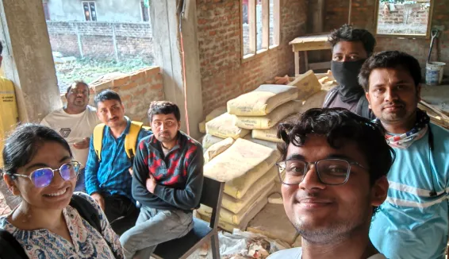
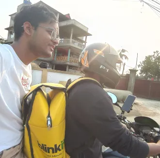
Our first few visits were simple: we walked up to riders and asked, “what problems do you face?” We didn’t get much. Our professor had warned us that people rarely name their problems. It’s just the job, so they’ve stopped noticing. So we stopped asking and started watching.
How we learned
Multi-stakeholder mapping
Interviews with store captains and pickers, to see how warehouse efficiency drives the rider’s rush on the road.
Shadowing and service safaris
Riding along on live deliveries to feel the friction of the “last 100 metres”, from darkstore to doorstep.
Naturalistic observation
Watching unfiltered culture and coping mechanisms, to map the psychological toll of gig work.
Artifact and ergonomic analysis
Looking at bags, uniforms and phone mounts for “gaps in provision”, where riders hack their own solutions.
3darkstoresrepeated visits to observe high-pressure operations
3live deliveriesfirsthand “service safari”
2store managersinterviews to understand backend metrics
2platformsBlinkit vs Flipkart Minutes
40+hoursof direct frontline observation, combined
What we found
Some of our assumptions held, but the picture was incomplete.
Happy
Higher pay, flexible shifts and low-cost EV rentals make quick commerce a strategic choice for financial mobility.
Neutral
Dark stores provide essential amenities, but act as “digital anchors” that strictly regulate rider movement and facility access.
Sad
Riders bear the brunt of the “last-mile risk”, absorbing financial losses from cancellations, return loops and damaged goods.
Systems mapping
The macro view: the whole delivery system in one ERAF diagram.
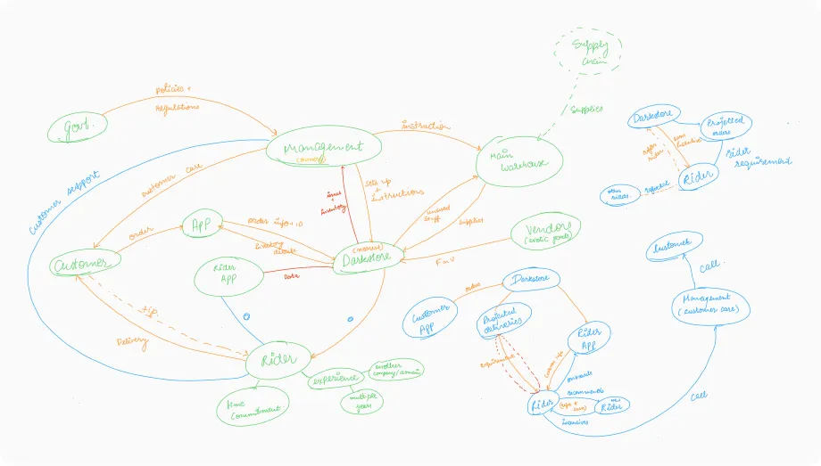
The micro view: a rider’s journey through the app, order by order.
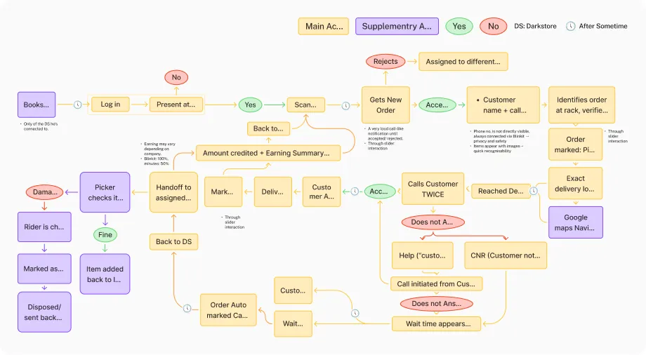
The Only Human Face
The rider is the only part of a massive, invisible supply chain that the customer actually sees and interacts with.
A Smart, Tactical Choice
Most riders choose this work for the flexibility and easy entry, not out of a lack of skill or options.
Bearing the System’s Burden
When warehouses lack basic facilities, the rider absorbs the physical stress of that neglect.
Unmediated Empathy
A tip is a rare, direct human connection that bypasses the algorithm to show genuine appreciation.
Insight
While riders are happy with their autonomy, they are sad because the system forces them to absorb the cost of customer delays. Waiting at the doorstep doesn’t just stall a delivery. It creates a “Payment Gap” by blocking them from their next order.
Wasted Trips
When an order is cancelled or the customer can’t be reached, the rider heads back to the hub with nothing delivered, wasting time and fuel.
Doorstep Delays
The high-speed system stalls when riders wait 15 to 20 minutes at the destination for a customer.
The Payment Gap
Earnings depend on how many orders a rider completes. The time lost to one failed delivery could have gone to a second one, so riders earn less than their time was worth, even when they are paid.
Money Penalties
Riders are charged directly for “damaged” items, shifting the platform’s financial risk onto the worker.
What a rider is paid when a delivery fails
100%Blinkitof the fare, but the rider’s time is lost
50%Flipkart Minutesof the fare, whatever the reason
Because of gaps in the system, the rider pays for everyone else’s delays: in time, in fuel, and in lost orders.
A delivery that should take 30 minutes can stall for 45 to 60 when a customer doesn’t pick up, and the time a rider loses is time they could have spent earning.
To move beyond symptoms, we mapped every systemic failure that leads to a rider’s loss of income.
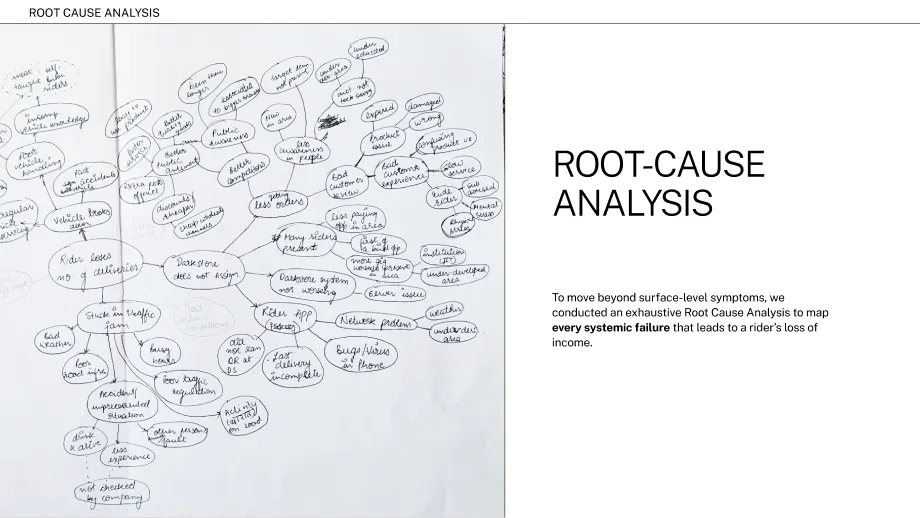
Navigational & Environmental Precision
Technical Reliability & Connectivity
Communication and language barrier
Customer delays
Darkstore Friction
Rider health and well-being
Rider faults
Rider Awareness
Direction
From the root causes we picked the one that touches both sides: how customers and riders reach each other. Our approach: humanize the exchange between them, and clear up the small operational frictions that cause delays. We designed on Blinkit because it was the closest to us: its darkstore is right outside our usual hangout, the khokha on campus, so we could keep going back.
What intuitive interaction can be designed to enhance the communication experience between customers and delivery agents?
We designed for four situations at the door:
The customer answers, but wastes time.
No call, but messaging is possible.
No call and no messaging.
Extreme conditions, where no one is available to contact.
Ideation
Concept designs on the Blinkit app. Not affiliated with Blinkit.
For customers
Verified rider call
Calls arrive as “Blinkit Rider” with the reason on screen: “Need security code to enter.” Routing calls through VoIP protects privacy, but it makes riders look like telemarketers. This fixes that.
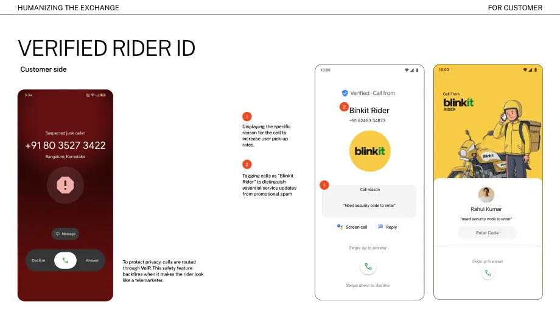
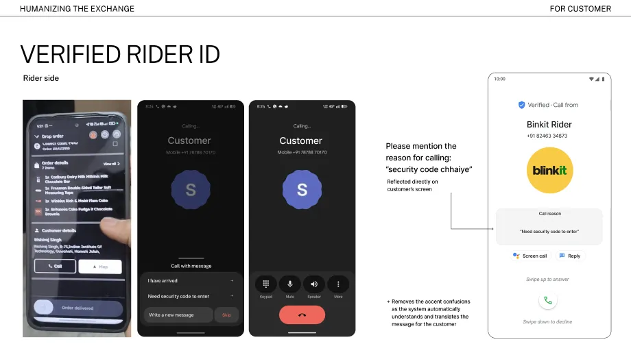
For customers
Status updates
“Rider is 2 minutes away” says nothing. “Rider is navigating heavy rain and traffic” gives the customer a reason to meet them at the door.
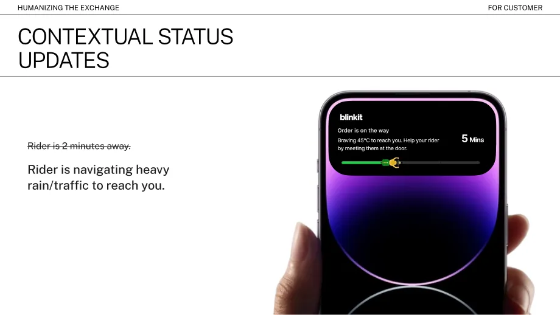
For customers
Contacts directory
Pair backup contacts with saved addresses: a spouse for Home, a colleague for Office. When the main person doesn’t answer, the app suggests the right backup. Estimated saving: about 10 minutes per failed delivery.
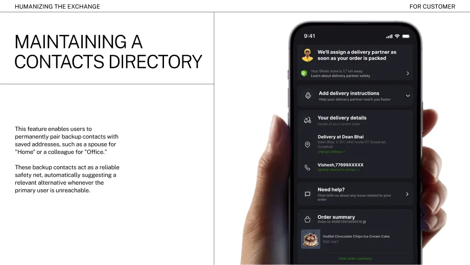
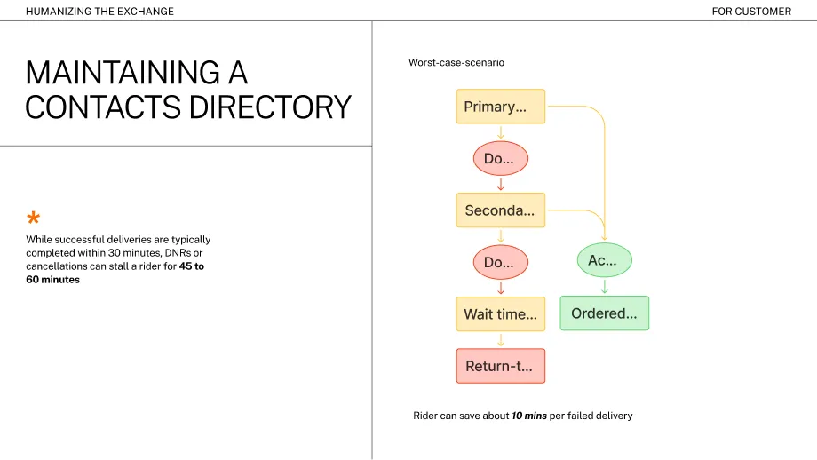
For customers
Active order bar
A thin persistent bar at the screen edge during a live delivery, for people who have notifications switched off.
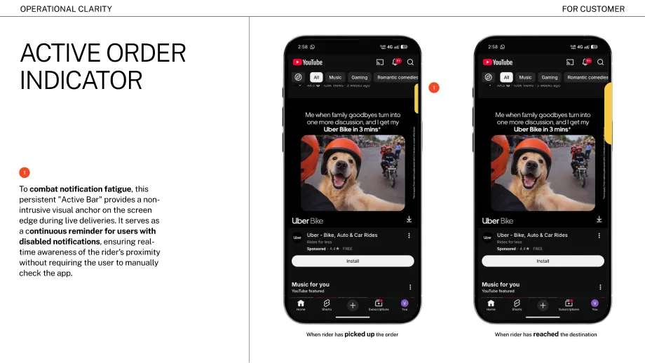
For riders
Crowd-sourced map
Maps get a rider to the building, not to the right lift. Paths from earlier deliveries show the way from the security gate to the exact tower and elevator.
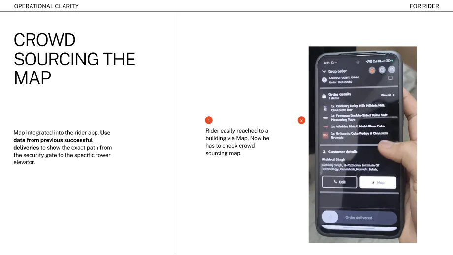
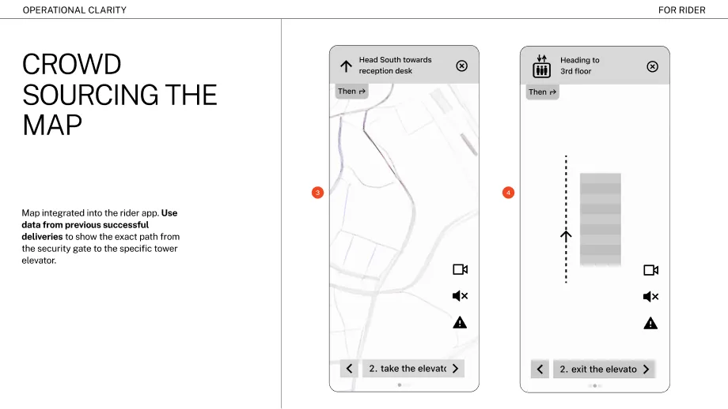
Takeaways
The story we started with was only partly true. We only found that out by stepping out of the studio and watching riders in their element. Narratives and desk research get you to the starting line. The real brief is out in the field, and that holds for every project.
Some problems only show up on the ground. The wait at the door, the walk from the gate to the right lift: nobody puts these in a brief. We found them by riding along (quite literally).
We chose not to continue this into BTP, so the designs haven’t been tested with riders or customers. They are well-grounded ideas, not proven fixes.